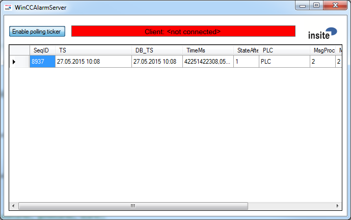
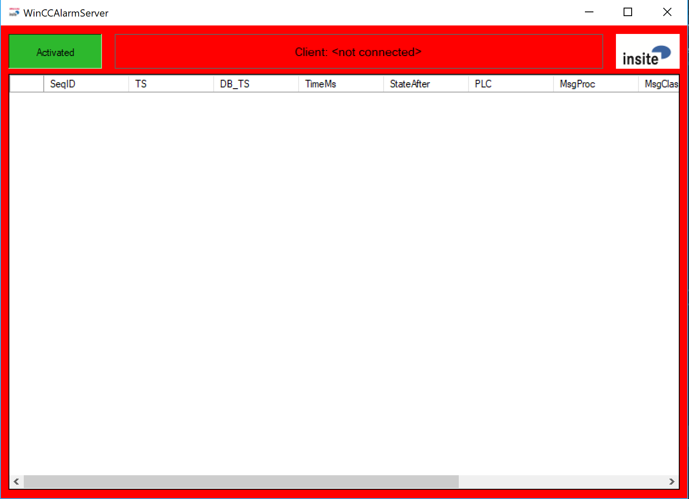
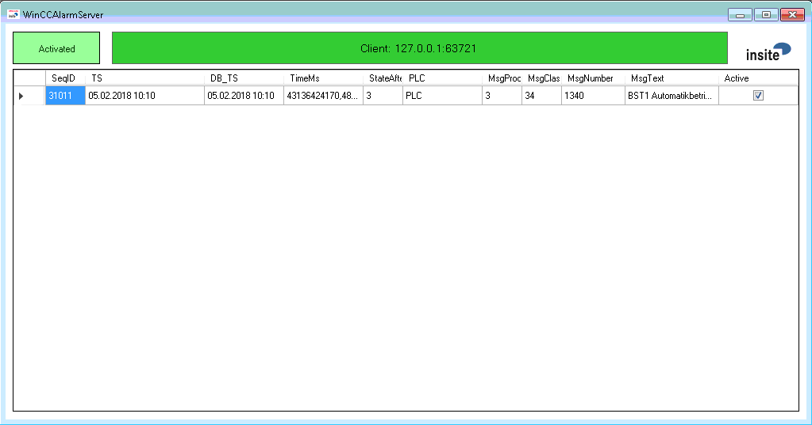

WinCCAlarmServer
insite GmbH
Overview
General Information
The program "WinCCAlarmServer" transmits the current state and progress of alarm states to a connected TCP/IP client. The source of the alarm data is a Message Archive table ("Meldearchiv") in a database on a Microsoft SQL server. By cyclically polling this database table the current status of the alarms registered there is determined, transformed into telegrams and forwarded to the client. Some entries in the table signal error states in the communication between the WinCC-Runtime environment and PLC or the Offline-Status of the WinCC-Runtime. These entries serve as a "marker", e.g. to implicitly terminate or generally ignore alarm states. The features for detecting such entries can be defined via the configuration file.
Preparation of the Microsoft SQL Server
The Microsoft SQL Server Express can be used, for example, as a database. This can be obtained free of charge from Microsoft via the Internet.
Before you can work with the WinCCAlarmServer, however, the SQL server must be patched by several SQL scripts after the initial installation. This patch ensures that the Message Archive will contain a column "SeqID" also after a new installation, which can guarantee the chronology of the registered events. The scripts are provided by Siemens and must be executed once (e.g. with the aid of the application "Microsoft SQL Server Management Studio Express" - part of the aforementioned Express package).
Program Window
The application window essentially represents four main states:
- Enable polling ticker: The Polling database can be switched on and off (Default: on)
- ** Verbindungsanzeige:** Address and connection port of the currently connected TCP/IP-Client.
- Aktuelle Meldungen: The table shows the currently pending alarms.
- Datenbankverbindung: The whole window is displayed in red and placed in the foreground when there is no database connection.
Database connection ok, but no client connected

Database connection not ok and no client connection

Database connection ok and a client is connected

Files
Configuration file
These are XML files. A standard text editor or (better) an XML editor (e.g. the free "XML Notepad", download from Microsoft) can be used for editing.
XML?
An XML document consists of the following elements. An element comprises a Start-Tag and End-Tag. Between the Start-Tag and End-Tag of an element can either be an element value or additional elements. This allows data structures to be mapped hierarchically:
<person> Start-Tag of the person element
<name> Start-Tag of the name element
Gorkow Value of the name element
</name> End-Tag of the name element
<first name> Start-Tag of the first name element
Karsten Value of the first name element
<first name> End-Tag of the first name element
<person> End-Tag of the person element
In the case of the configuration file, e.g. all application specific settings are stored in elements with the following structure:
<SettingNameDescription>Value</SettingNameDescription>
Configuration Parameters
The configuration parameters and a description of their position in the configuration file will now follow. The path to the element concerned is presented here according to a path on a data carrier with the "/" as a delimiter. If an attribute value plays a role for the selection, the name and value of the attribute is attached to the element in round brackets.
Example of the above server port:
<TCPIPPort>7777</TCPIPPort>
Allow disabling of DB polling in UI
Element: AllowDisablingOfDBPolling
Default: true
Connection string to the database
Element: DBConnectionString
Default: Data Source=.$\backslash\backslash$SQLEXPRESS;Initial Catalog=ARCHIV1;Integrated Security=True
Severport
Element: TCPIPPort
Default: 7777
Polling interval for database in milliseconds
Element: DBPollingRate
Default: 2000
Name of the database table (Meldearchiv)
Element: DBTableName
Default: Meldearchiv_10
Substring in the message text of the WinCC Runtime online message
Element: MsgTextOnline
Default: Change to the 'Online' operating mode.
Content of the MsgProc column for online message of the WinCC-Runtime
Element: MsgProcOnline
Default: 1
A value <= 0 in this parameter causes this column to be ignored when searching this dataset.
Content of the MsgClass column for online message of the WinCC-Runtime
Element: MsgClassOnline
Default: 3
A value <= 0 in this parameter causes this column to be ignored when searching this dataset.
Content of the MsgNumber column for online message of the WinCC-Runtime
Element: MsgNumberOnline
Default: 110001
A value <= 0 in this parameter causes this column to be ignored when searching this dataset.
Substring in the message text in the event of a connection disruption to the PLC
Element: MsgTextConnDown
Default: Connection terminated
Content of the MsgProc column in the event of a connection disruption to the PLC
Element: MsgProcConnDown
Default: 1
A value <= 0 in this parameter causes this column to be ignored when searching this dataset.
Content of the MsgClass column in the event of a connection disruption to the PLC
Element: MsgClassConnDown
Default: 3
A value <= 0 in this parameter causes this column to be ignored when searching this dataset
Content of the MsgNumber column in the event of a connection disruption to the PLC
Element: MsgNumberConnDown
Default: 140000
A value <= 0 in this parameter causes this column to be ignored when searching this dataset.
Substring in the message text after reestablishing connection with PLC
Element: MsgTextConnUp
Default: Connection established
Content of the MsgProc column after reestablishing connection with PLC
Element: MsgProcConnUp
Default: 1
A value <= 0 in this parameter causes this column to be ignored when searching this dataset.
Content of the MsgClass column after reestablishing connection with PLC
Element: MsgClassConnUp
Default: 3
A value <= 0 in this parameter causes this column to be ignored when searching this dataset.
Content of the MsgNumber column after reestablishing connection with PLC
Element: MsgNumberConnUp
Default: 140000
A value <= 0 in this parameter causes this column to be ignored when searching this dataset.
Message text when you exit WinCCflex or disconnect the database connection
Element: MsgTextWinCCFlexDownAlarm
Default: ""
A value == "" in this parameter means that the message will not be sent.
MsgProc when you exit WinCCflex or disconnect the database connection
Element: MsgProcWinCCFlexDownAlarm
Default: 0
MsgClass when you exit WinCCflex or disconnect the database connection
Element: MsgClassWinCCFlexDownAlarm
Default: 0
Messages which do not have PLCMarker ut to be still passed
Element: HandledHMIMsgNumbers
Default: ""
This field can be filled with a semicolon-separated list of message numbers. (e.g .: "320008;320009")
Disconnection after each polling
Element: DBDisconnectAfterPolling
Default: false
Marker for PLC alarm
Element: PLCMarker
Default: WinLC RTX
Do not set any SeqID filter when reading out the alarms from the database
Element: UseUnfilteredQuery
Default: false
Use a databsae filter by time and seqid to determine unhandled entries
Element: UseChronologicalFilter
Default: (depending on UseChronologicalOrderToVerifyMsgPair )
Number of days the log files are kept before being deleted
Element: DaysToKeepLogfiles
Default: 7
Controlling the comparison to determine whether a leaving message belongs to a specific pending alarm
Elements: UseMsgTextToVerifyMsgPair, UseMsgClassToVerifyMsgPair, UseMsgProcToVerifyMsgPair, UseMsgNumberToVerifyMsgPair
Default: all true
During the allocation, a leaving message for a pending alarm is checked by default for compliance with all 4 message criteria (Text, Proc, Class, Number).
This behaviour can be influenced with these flags. If the corresponding flag for a criterion is not set (false), the criterion is ignored during the allocation.
Controlling the comparison to determine whether a coming message is already pending
Elements: UseMsgTextToMatchPendingMsgs, UseMsgClassToMatchPendingMsgs, UseMsgProcToMatchPendingMsgs, UseMsgNumberToMatchPendingMsgs,
UseVar1ToMatchPendingMsgs, ... , UseVar8ToMatchPendingMsgs
Default: all true
Coming alarms are only ever detected as "already pending" if all elements specified with true match.
Log File
A log file is generated in the current work directory daily - the name of the file is made up as follows:
LOG_YYYYMMDD.txt
(Year, Month, Day)